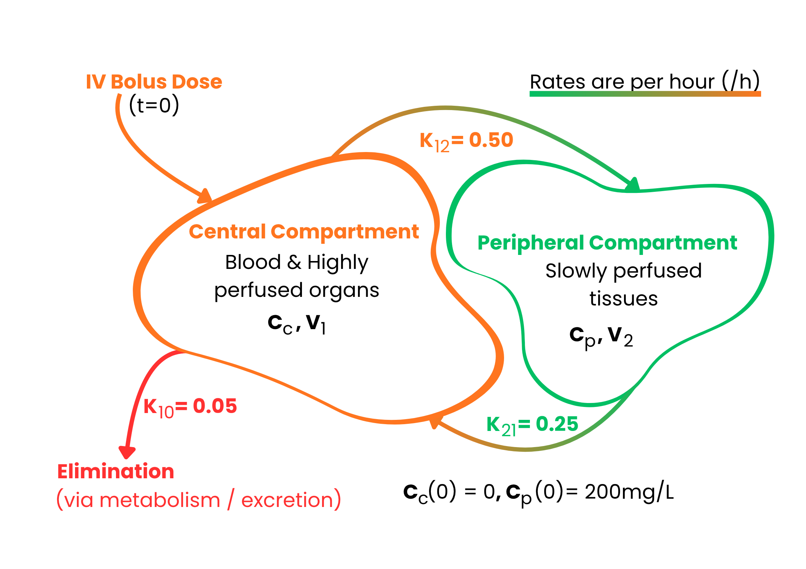

Two-Compartment
Pharmacokinetic Model
A mathematical description of how an intravenously administered drug distributes between the bloodstream and body tissues, governed by a coupled system of first-order differential equations.
01 Model Structure
The body is divided into two connected compartments. The central compartment represents blood plasma and highly perfused organs (heart, liver, lungs, kidneys). The peripheral compartment represents slowly perfused tissues such as muscle and fat. A single intravenous (IV) bolus dose enters the central compartment at time t = 0, from which the drug distributes to the periphery and is eliminated from the body.

Figure 1. Compartmental Model
02 State Variables
The model tracks how drug concentration in each compartment changes as a function of time t (in hours).
| Variable | Symbol | Units | Meaning |
|---|---|---|---|
| Central concentration | Cc(t) | mg/L | Drug concentration in blood and highly perfused organs |
| Peripheral concentration | Cp(t) | mg/L | Drug concentration in slowly perfused tissues |
| Central amount | Ac(t) | mg | Mass of drug in the central compartment (Ac = Cc × V1) |
| Peripheral amount | Ap(t) | mg | Mass of drug in the peripheral compartment (Ap = Cp × V2) |
| Time | t | hours | Independent variable (time since dose administration) |
03 Parameters
Fixed constants governing the rate of each first-order process. The transfer and elimination constants determine how quickly the drug moves between compartments and clears from the body.
| Parameter | Symbol | Value | Units | Description |
|---|---|---|---|---|
| Elimination rate | k10 | 0.05 | h⁻¹ | Irreversible elimination from the central compartment (metabolism/excretion) |
| Transfer C → P | k12 | 0.50 | h⁻¹ | Drug transfer from central to peripheral compartment |
| Transfer P → C | k21 | 0.25 | h⁻¹ | Drug transfer from peripheral back to central compartment |
| Central volume | V1 | — | L | Volume of distribution of the central compartment |
| Peripheral volume | V2 | — | L | Volume of distribution of the peripheral compartment |
04 Governing Equations
Amount–concentration relationship
The total amount of drug in each compartment relates to its concentration and the volume of that compartment:
Core ODE system (concentration form)
Dividing by compartment volumes and accounting for all first-order transfers and elimination gives the primary system of ordinary differential equations:
What each term represents
| Term | Pharmacokinetic meaning |
|---|---|
| −k12·Cc | central Drug leaving for the peripheral compartment (distribution out) |
| −k10·Cc | central Drug eliminated from the body (metabolism / excretion) |
| +k21·Cp | central Drug returning from the peripheral compartment |
| +k12·Cc | peripheral Drug arriving from the central compartment |
| −k21·Cp | peripheral Drug returning to the central compartment |
Matrix (state-space) form
The ODE system can be written compactly in matrix form, enabling eigenvalue analysis for the analytical solution:
05 Analytical (Exact) Solution
Solving the eigenvalue problem of A yields two eigenvalues corresponding to a fast distributive phase (large negative λ) and a slow terminal elimination phase (small negative λ):
Applying the initial conditions Cc(0) = 0 and Cp(0) = 200 gives the closed-form biexponential solutions for each compartment:

Figure 2. Illustrative drug concentration profiles. Central compartment (Cc) rises as the drug distributes from the initial peripheral depot, then both compartments decline as elimination proceeds.
06 Numerical Methods & Accuracy
The ODE system is solved at discrete time steps (Δt = 0.1 h) using three methods, then compared against the exact analytical solution. Lower overall average error indicates better accuracy.
| Method | Order | Central Avg. Error | Peripheral Avg. Error | Overall Error |
|---|---|---|---|---|
| Euler Method | 1st | 0.2771 | 0.2953 | 28.62% |
| Adams–Bashforth–Moulton | 4th | 0.0663 | 0.0868 | 7.66% |
| 4th-Order Runge–Kutta ✓ | 4th | 0.0086 | 0.0221 | 1.54% |
A simple first-order method that approximates the derivative iteratively at each step. Fast and easy to implement, but accumulates significant error — especially during the rapid early distribution phase.
A predictor-corrector multistep method that balances accuracy and computational efficiency. Requires several prior time-step values to bootstrap, but delivers intermediate accuracy.
Computes four intermediate slope estimates per step to produce a highly accurate result. More computationally intensive per step than Euler, but far more reliable across the full simulation window.
Model based on: Fatima K, Ali B, Khan AA, Ahmed S, Ateya AA, Ahmad N. A Comparative Analysis of Numerical Methods for Mathematical Modelling of Intravascular Drug Concentrations Using a Two-Compartment Pharmacokinetic Model. Math. Comput. Appl. 2025, 30, 70. doi.org/10.3390/mca30040070